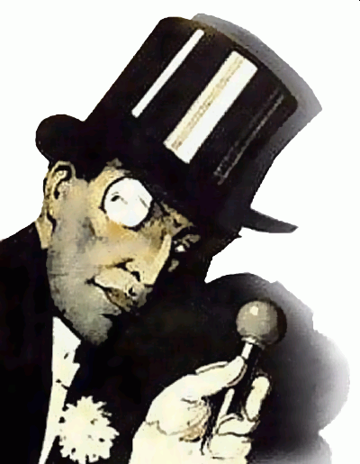
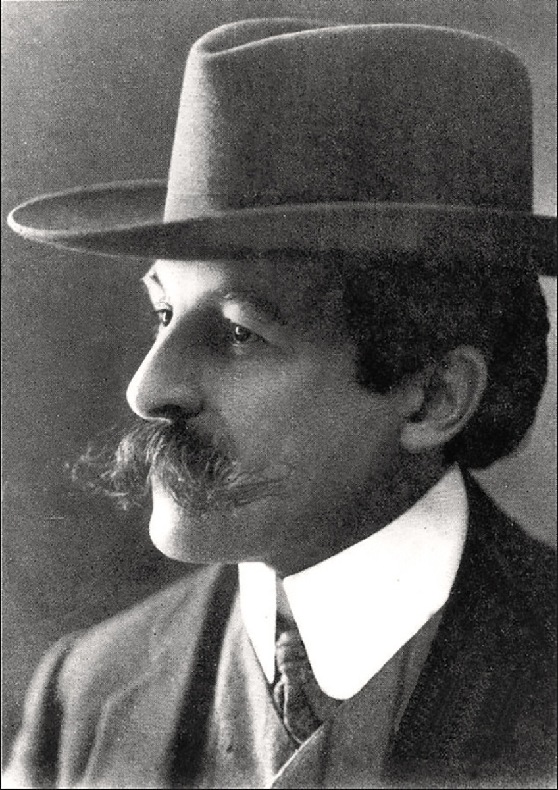
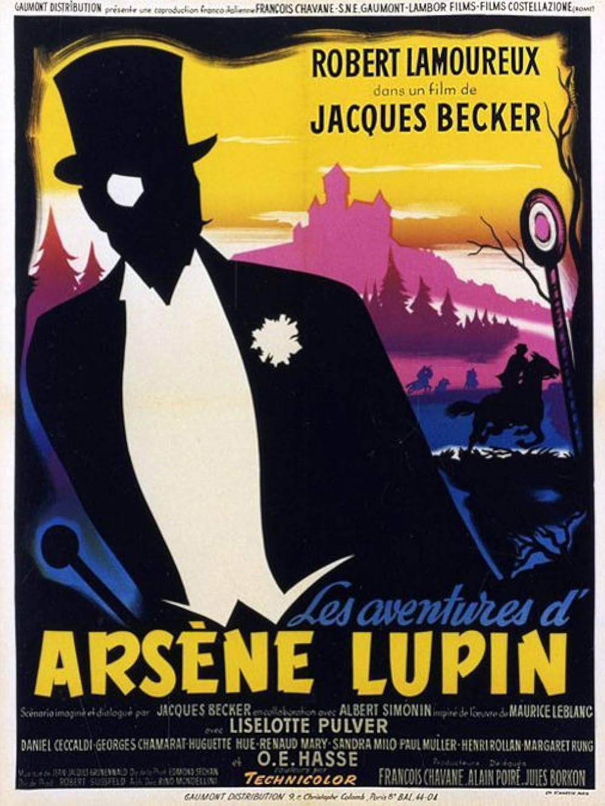
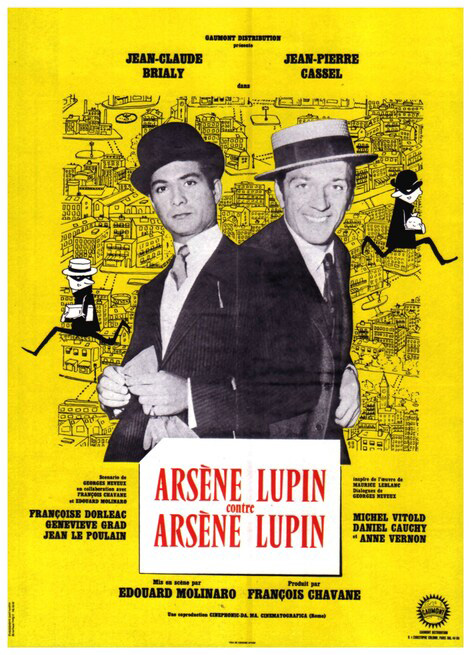
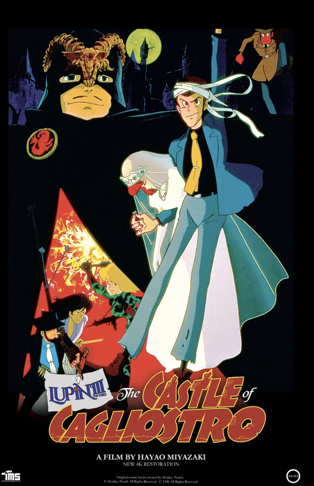
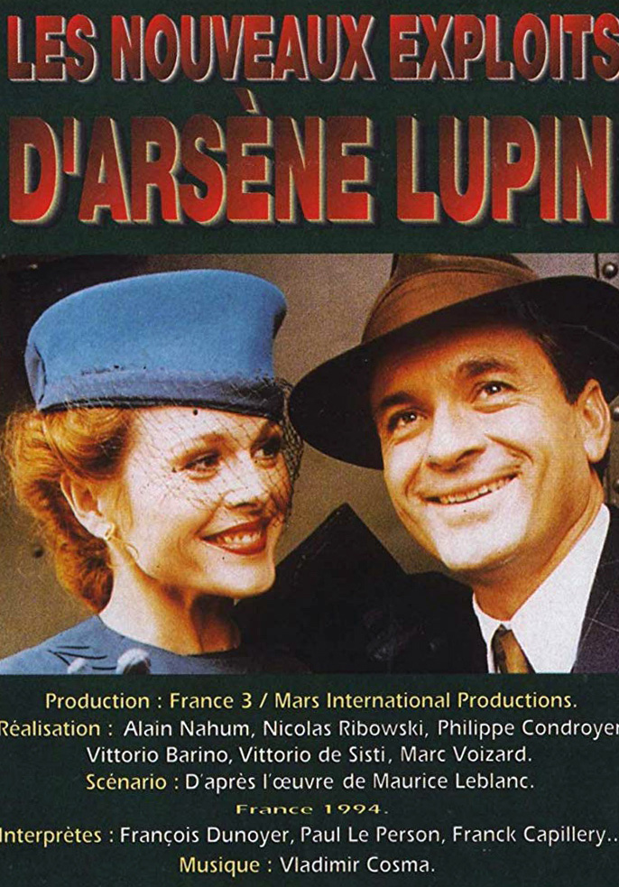

1907Raccolta di 9 racconti
Arsenio Lupin, ladro gentiluomo
«Arsène Lupin, gentleman-cambrioleur»
La celebre opera d’esordio che raccoglie i primi racconti usciti su «Je Sais Tout».❦ Vedi i 9 racconti ›
Il Ladro Gentiluomo
Nato dalla penna raffinata di Maurice Leblanc nel 1905 sulle pagine della celebre rivista parigina «Je Sais Tout». Maestro del travestimento, paladino dell’ingegno, ironico e inafferrabile custode dei più reconditi segreti di Francia.
Dalla Parigi di inizio Novecento all’immaginario collettivo universale

Arsène Lupin è un personaggio di fantasia francese, creato da Maurice Leblanc. Questo ladro gentiluomo è particolarmente noto per la sua abilità nell’utilizzare travestimenti, trucchi e identità multiple per commettere crimini e risolvere casi.
L’eroe appare per la prima volta nel racconto L’arresto di Arsenio Lupin, pubblicato sulla rivista Je sais tout nel luglio del 1905. Il suo creatore, Maurice Leblanc, incluse questo racconto nella raccolta Arsenio Lupin, ladro gentiluomo, pubblicata nel 1907. Considerato il grande successo riscosso dal personaggio tra i lettori, le sue avventure sono state pubblicate in diciassette romanzi, trentanove racconti e cinque opere teatrali dal 1905 fino alla morte dell’autore, avvenuta nel 1941.
Le sue numerose avventure sono ambientate in Francia durante la Belle Époque e i ruggenti anni Venti, periodi in cui Arsène Lupin riflette l’evoluzione del pensiero dell’autore: le simpatie anarchiche di Lupin scompaiono nei romanzi scritti durante la Prima guerra mondiale, periodo in cui il personaggio diventa profondamente patriottico. Inoltre, smette gradualmente di essere un ladro per diventare un detective. Oltre a essere un atleta e un combattente esperto, Lupin possiede un talento innato per il travestimento e una grande astuzia, qualità che sfrutta per risolvere enigmi di ogni tipo.
Così lo presenta il suo «amico-biografo» ne L’arresto di Arsenio Lupin, in Arsenio Lupin, ladro gentiluomo (1907): “Il suo ritratto? Come potrei farlo? Venti volte ho visto Arsène Lupin, e venti volte è apparsa davanti a me una persona diversa o, piuttosto, la stessa persona di cui venti specchi mi avrebbero rinviato altrettante immagini deformate [...]. «Io stesso», mi disse, «non so più bene chi io sia. In uno specchio non mi riconosco più». [...] E precisa, con una punta d’orgoglio: «Tanto meglio se non si può mai dire in tutta certezza: “Ecco Arsène Lupin”. L’essenziale è che si dica senza timore di sbagliare: “Arsène Lupin ha fatto questo”»”
La sua natura infantile e affascinante, spesso beffarda, unita a un carattere tormentato e misterioso, lo ha reso una figura popolare, incarnando il ladro gentiluomo della Belle Époque. La sua fama internazionale ha dato vita ad adattamenti cinematografici americani e a manga realizzati da autori giapponesi. Il suo nome è inoltre legato alla città francese di Étretat, in Normandia, che è al centro di diverse sue avventure, come «Il faraglione cavo», contribuendo così al mito che circonda il luogo.

Scrittore & Giornalista
Légion d’Honneur (1908)
Villa «Le Clos Lupin»
Étretat, Normandia
Maurice Marie Émile Leblanc nacque a Rouen, in Normandia, l’11 dicembre 1864, secondo figlio di una famiglia agiata e colta. Rifiutando la carriera che il padre aveva immaginato per lui in una fabbrica di carte da gioco, si trasferì a Parigi nel 1888 per dedicarsi alla scrittura, lavorando come giornalista e pubblicando romanzi di costume di ispirazione naturalista; da adolescente aveva peraltro frequentato, a Rouen, Gustave Flaubert e Guy de Maupassant.
La sua vita cambiò per sempre nel 1905, quando l’editore Pierre Lafitte gli commissionò un racconto per la nuova rivista «Je Sais Tout»: nacque così Arsène Lupin, il ladro gentiluomo, personaggio che ebbe un successo immediato e clamoroso, tanto da spingere Leblanc a dedicargli quasi l’intera produzione successiva, con qualche insofferenza per essere rimasto identificato solo con quella creatura di carta.
Leblanc trascorse lunghi periodi a Étretat, in Normandia, nella villa che chiamò «Le Clos Lupin» (oggi museo dedicato al personaggio), fonte di ispirazione per molte ambientazioni delle sue storie, tra cui «L’Aiguille creuse». Fu nominato Cavaliere della Légion d’Honneur il 17 gennaio 1908, per i suoi servizi alla letteratura. Morì a Perpignan il 6 novembre 1941, all’età di 76 anni, lasciando un’eredità letteraria che avrebbe attraversato il secolo successivo attraverso innumerevoli adattamenti teatrali, cinematografici e televisivi.
Il canone letterario ufficiale scritto da Maurice Leblanc (1907 – postumi)
«Arsène Lupin, gentleman-cambrioleur»
La celebre opera d’esordio che raccoglie i primi racconti usciti su «Je Sais Tout».❦ Vedi i 9 racconti ›
«Arsène Lupin contre Herlock Sholmès»
Il leggendario scontro con la celebre parodia del detective britannico di Conan Doyle.❦ Vedi i due episodi ›
«L’Aiguille creuse»
Noto anche come «La guglia cava» o «Il segreto della guglia». Capolavoro indiscusso.
«813»
Riedito nel 1917 in due tomi: «La doppia vita di Arsenio Lupin» e «I tre delitti di Arsenio Lupin».❦ Vedi i due volumi del 1917 ›
«Le bouchon de cristal»
Ispirato al noto scandalo di Panama; uno dei romanzi più drammatici della saga.
«L’homme à la peau de bique»
Pubblicato inizialmente su rivista negli Stati Uniti prima dell’edizione francese.
«Les confidences d’Arsène Lupin»
Nove brillanti avventure retrospettive narrate dal ladro gentiluomo.❦ Vedi i 9 racconti ›
«L’Éclat d’obus»
Ambientato durante la Prima guerra mondiale; apparizione cameo di Lupin.
«Le Triangle d’or»
Un intrigo patriottico ed economico all’ombra della Grande Guerra.
«L’Ile aux Trente Cercueils»
Toni gotici, leggende celtiche e misteri sulla remota isola bretone di Sarek.
«Les Dents du Tigre»
Lupin torna sotto l’identità di Don Luis Perenna per risolvere un’eredità insanguinata.
«Les huit coups de l’horloge»
Lupin, nei panni del principe Rénine, risolve otto enigmi con la giovane Hortense.❦ Vedi i 8 racconti ›
«La comtesse de Cagliostro»
La giovinezza di Lupin (Raoul d’Andrésy) e la sua prima grande nemica/amante.
«Le pardessus d’Arsène Lupin»
Breve racconto investigativo pubblicato sul periodico «Le Journal».
«La demoiselle aux yeux verts»
Un inseguimento amoroso e investigativo attraverso le province francesi.
«L’agence Barnett et Cie»
Lupin assume l’identità del detective privato Jim Barnett.❦ Vedi i 8 racconti ›
«Le pont qui s’effondre»
Pubblicato sulla rivista «L’Émulation» di Rouen.
«La demeure mystérieuse»
Il furto dei diamanti di un’attrice e il rapimento all’Opera di Parigi.
«Le cabochon d’émeraude»
Noto anche come «L’anello di smeraldo», incentrato su un raffinato enigma matrimoniale.
«La Barre-Y-Va»
Misteri e vecchie vendette in un maniero di campagna in Normandia.
«La femme aux deux sourires»
Un’avventura intricata che intreccia furti di quadri e identità segrete.
«Victor, de la Brigade Mondaine»
Lupin si infiltra nella polizia parigina come ispettore capo.
«La Cagliostro se venge»
Il ritorno dell’antica e spietata rivale di gioventù di Arsène.
«Les milliards d’Arsène Lupin»
Pubblicato a puntate su «L’Auto» prima della morte dell’autore e in volume postumo.
«Le dernier amour d’Arsène Lupin»
Manoscritto riscoperto scritto intorno al 1936 e pubblicato dagli eredi Leblanc.
Nessuna opera corrisponde alla ricerca «».
Il fascino parigino di Lupin calca il palcoscenico dei boulevard
Titolo orig.: «Arsène Lupin»
Scritta in collaborazione con Francis De Croisset. Trionfo assoluto al Théâtre de l’Athénée di Parigi.
Approfondisci su Wikipedia (FR) ↗Titolo orig.: «Une aventure d’Arsène Lupin»
Dramma teatrale in un atto scritto da Maurice Leblanc.
Approfondisci su Wikipedia (FR) ↗Titolo orig.: «Le retour d’Arsène Lupin»
Scritta nuovamente a quattro mani con Francis De Croisset.
Approfondisci su Wikipedia (FR) ↗Titolo orig.: «Cette femme est à moi»
Commedia scritta negli anni Trenta ma mai rappresentata in scena; pubblicata solo postuma nel 2015 dall’Association des Amis d’Arsène Lupin.
Approfondisci su Wikipedia (FR) ↗Titolo orig.: «Un quart d’heure avec Arsène Lupin»
Breve atto unico radiofonico/teatrale di Maurice Leblanc.
Approfondisci su Wikipedia (FR) ↗Dalla celluloide muta del 1919 alle grandi produzioni televisive e moderne
Produzione statunitense, con William Ranous nel ruolo di Lupin.
Produzione tedesca in cinque episodi, con Paul Otto nel ruolo di Lupin.
Produzione francese, con Georges Tréville nel ruolo di Lupin.
Produzione statunitense, con William Stowell nel ruolo di Lupin.
Pellicola muta statunitense tratta dall’omonimo romanzo.
Produzione statunitense, con Wedgwood Nowell nel ruolo di Lupin.
Produzione ungherese, con Gusztav Partos nel ruolo di Lupin. Nella foto: il regista Paul Fejos.
Produzione giapponese, con Minami Kômei nel ruolo di Lupin.
Produzione tedesca, con Kurt Gerron nel ruolo di Lupin (nel film chiamato Arsène Dupin).
Produzione MGM con John Barrymore e Lionel Barrymore.
Produzione francese, con Jules Berry nel ruolo di Lupin.
Produzione statunitense, con Melvyn Douglas nel ruolo di Lupin.
Produzione statunitense, con Melvyn Douglas nel ruolo di Lupin.
Produzione messicana, con Ramon Pereda nel ruolo di Lupin.
Produzione messicana, con Ramon Pereda nel ruolo di Lupin.

«Les Aventures d’Arsène Lupin»
Jacques Becker
Con Robert Lamoureux nel ruolo di Lupin.
Robert Lamoureux riprende il ruolo del celebre ladro.

«Arsène Lupin contre Arsène Lupin»
Édouard Molinaro
Commedia con Jean-Claude Brialy e Jean-Pierre Cassel.

«Rupan sansei: Kariosutoro no shiro»
Hayao Miyazaki
Film d’animazione dedicato a Lupin III, con la voce di Yasuo Yamada nel ruolo del protagonista.
Produzione franco-italo-spagnola con Romain Duris, Kristin Scott Thomas ed Eva Green.
Serie franco-europea con Georges Descrières nel ruolo di Lupin.
Miniserie televisiva francese con Jean-Claude Brialy.

Orig.: «Le Retour d’Arsène Lupin»
Serie televisiva con François Dunoyer nel ruolo del protagonista.
Serie animata franco-canadese prodotta da Cinar e France-Animation (26 episodi).
Serie Netflix con Omar Sy nel ruolo di Assane Diop.
L’opera di Leblanc ha dato vita al capolavoro manga e anime «Lupin III» (ルパン三世) creato nel 1967 dal maestro Monkey Punch, incentrato sul nipote del ladro gentiluomo e divenuto un colosso della cultura pop mondiale.
La voce di Lupin sulle onde francesi
France Inter
Gli audiolibri Livraphone
Testo ridotto (3 cd)
Livraphone LIV 7014
Testo integrale (6 cd)
Livraphone LIV167C
Testo integrale (6 cd)
Livraphone EAN 3358950000197
Testo integrale (5 cd)
Livraphone EAN 3358950000319
Arsène Lupin adattato da André-Paul Duchâteau (Claude Lefrancq Éditeur, Bruxelles)
Disegni di Jacques Géron
Disegni di Jacques Géron
Disegni di Jacques Géron
Disegni di Jacques Géron
Disegni di Erwin Drèze
Disegni di Jacques Géron
«Arsène Lupin, gentleman-cambrioleur»
L’arresto di Arsenio Lupin
«L’arrestation d’Arsène Lupin»
Arsenio Lupin in prigione
«Arsène Lupin en prison»
L’evasione di Arsenio Lupin
«L’évasion d’Arsène Lupin»
Il misterioso viaggiatore
«Le mystérieux voyageur»
La collana della regina
«Le collier de la reine»
Il Sette di Cuori
«Le Sept de Cœur»
La cassaforte di madame Imbert
«Le coffre-fort de madame Imbert»
La perla nera
«La perle noire»
Herlock Sholmes arriva troppo tardi
«Herlock Sholmès arrive trop tard»
«Arsène Lupin contre Herlock Sholmès»
La donna bionda Romanzo
«La dame blonde»
La lampada ebraica Racconto
«La lampe juive»
«813»
La doppia vita di Arsenio Lupin Volume I
«La double vie d’Arsène Lupin»
I tre delitti di Arsenio Lupin Volume II
«Les trois crimes d’Arsène Lupin»
«Les confidences d’Arsène Lupin»
Giochi di sole
«Les jeux du soleil»
L’anello nuziale
«L’anneau nuptial»
Il segno dell’ombra
«Le signe de l’ombre»
La trappola infernale
«Le piège infernal»
La sciarpa di seta rossa
«L’écharpe de soie rouge»
La morte in agguato
«La mort qui rôde»
Edith dal Collo di Cigno
«Edith au Cou de Cygne»
La festuca di paglia
«Le fétu de paille»
Il matrimonio di Arsenio Lupin
«Le mariage d’Arsène Lupin»
«Les huit coups de l’horloge»
In cima alla torre
«Au sommet de la tour»
La caraffa d’acqua
«La carafe d’eau»
Thérèse e Germaine
«Thérèse et Germaine»
Il film rivelatore
«Le film révélateur»
Il caso di Jean-Louis
«Le cas de Jean-Louis»
La signora con l’ascia
«La dame à la hache»
Passi sulla neve
«Des pas sur la neige»
Al dio Mercurio
«Au dieu Mercure»
«L’agence Barnett et Cie»
Le gocce che cadono
«Les gouttes qui tombent»
La lettera d’amore di re George
«La lettre d’amour du roi George»
La partita di baccarà
«La partie de baccara»
L’uomo dai denti d’oro
«L’homme aux dents d’or»
Le dodici Africane di Béchoux
«Les douze Africaines de Béchoux»
Il caso fa miracoli
«Le hasard fait des miracles»
Guanti bianchi... gambali bianchi
«Gants blancs... guêtres blanches»
Béchoux arresta Jim Barnett
«Béchoux arrête Jim Barnett»